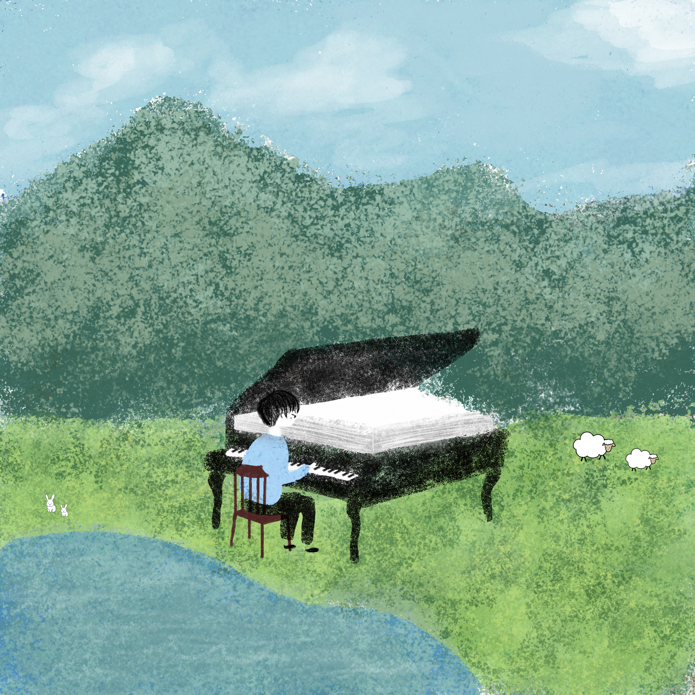
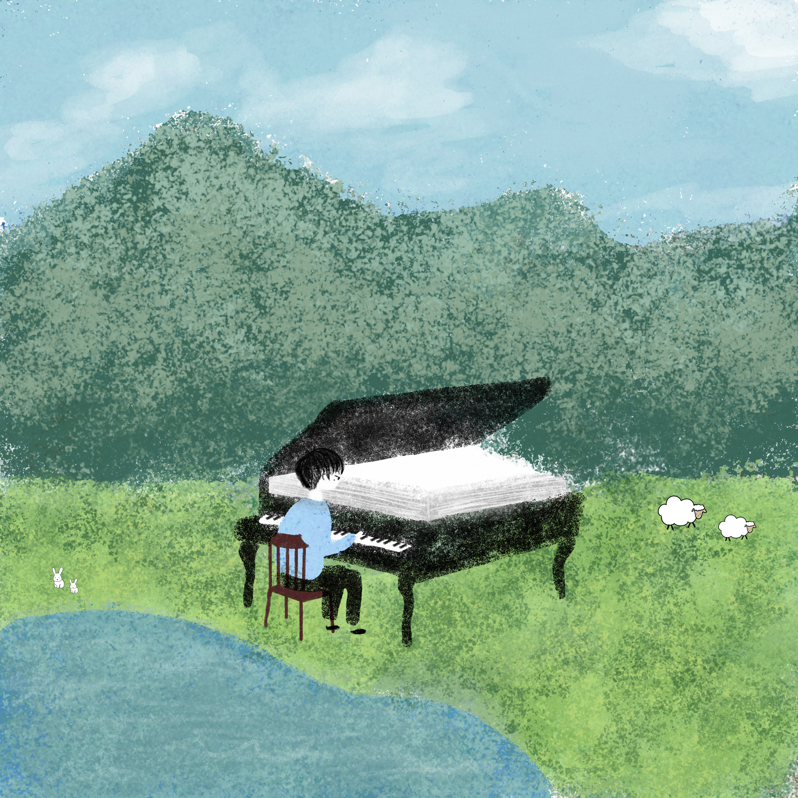

I also explored creating piano arrangements. Here is audio clip of a piano song I made.
For this project I used p5.js and Visual Studio Code to program a tool that can switch my drawings of a boy playing the piano with a click of a button. When you press start, a Pomodoro study timer will popup. On the sides of this program you can select prefered background noises to help you get in the zone of studying. I came up with this idea because I would use the Pomodoro study technique that they have on YouTube, but they were already premade and limited to what music, what vibes, and the background noises they had. If I wanted to study with specific background noise and music, I would have had to have different tabs opened. I wanted to create something that is all on one site and customizable specifically to the user.
 
